cfr <- read.csv("/Users/jingtao/Desktop/FALL 2025/DATA VISUALIZATION/Jing Tao/CFR_daily_events_with_iso2.csv",
stringsAsFactors = FALSE)
cfr$Date <- as.Date(cfr$Date)
cfr$Year <- as.numeric(format(cfr$Date, "%Y"))
cfr <- cfr[!is.na(cfr$ISO2) & cfr$ISO2 != "", ]
daily_tab <- table(cfr$Date)
daily_counts <- as.data.frame(daily_tab)
names(daily_counts) <- c("Date", "Count")
daily_counts$Date <- as.Date(daily_counts$Date)
daily_counts <- daily_counts[order(daily_counts$Date), ]
daily_counts$CumCount <- cumsum(daily_counts$Count)
victim_counts <- sort(table(cfr$ISO2), decreasing = TRUE)
top_n <- 10
top_victims <- names(victim_counts)[1:top_n]
victim_counts_top <- victim_counts[top_victims]
victim_counts_top_df <- data.frame(
ISO2 = names(victim_counts_top),
Count = as.vector(victim_counts_top)
)
cfr_top <- cfr[cfr$ISO2 %in% top_victims, ]Assignment 5
## 1: Base R Graphics
### 1(a) Histogram – Daily Incident Counts
hist(daily_counts$Count,
main = "Histogram of Daily Cyber Incidents (Targets)",
xlab = "Number of Incidents per Day",
ylab = "Number of Days",
col = "lightblue",
border = "white")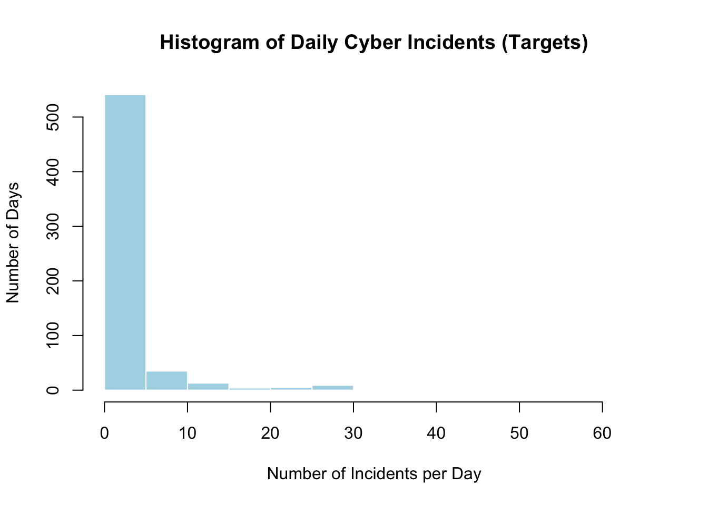
#1(b.i) Vertical Bar Chart – Top 10 Target Countries
barplot(victim_counts_top,
main = "Top 10 Target Countries by Incident Count (Vertical)",
xlab = "Target Country (ISO2)",
ylab = "Number of Incidents",
col = "lightgreen",
border = "darkgreen",
las = 2)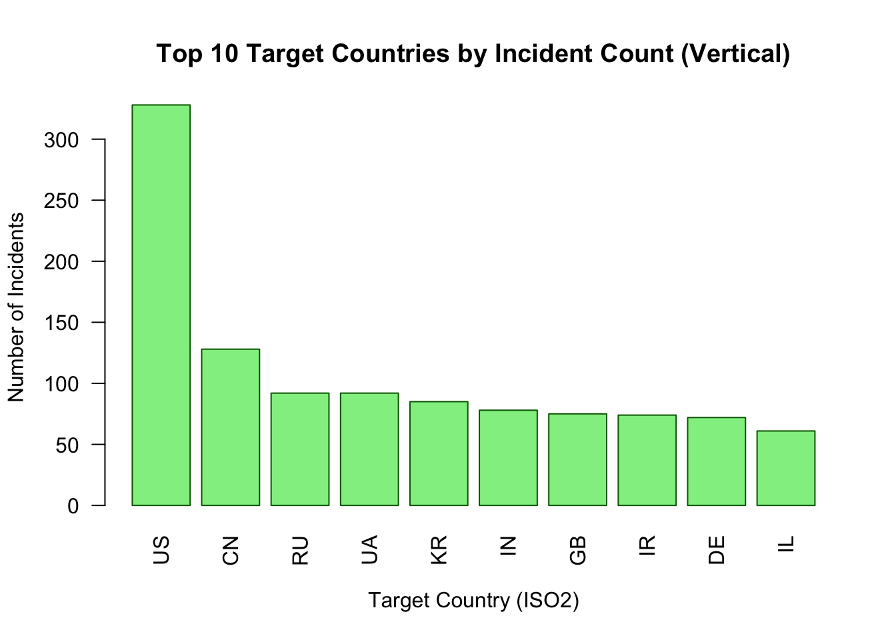
# 1(b.ii) Horizontal Bar Chart – Top 10 Target Countries
barplot(victim_counts_top,
main = "Top 10 Target Countries by Incident Count (Horizontal)",
xlab = "Number of Incidents",
ylab = "Target Country (ISO2)",
col = "lightgreen",
border = "darkgreen",
horiz = TRUE,
las = 1)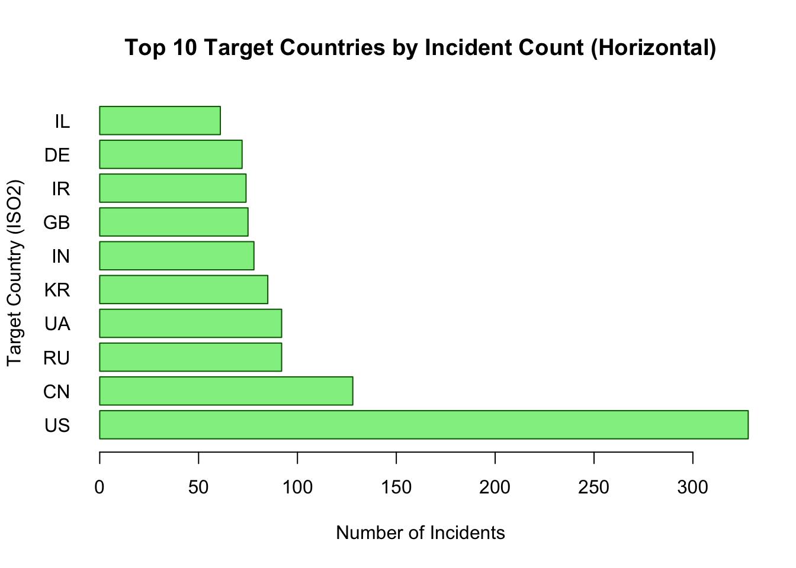
#1(c) Pie Chart – Share among Top 10 Targets
pie(victim_counts_top,
main = "Share of Incidents among Top 10 Target Countries",
col = c("lightblue", "lightgreen", "lightpink",
"lavender", "khaki", "orange",
"lightcyan", "plum", "wheat", "lightsalmon"))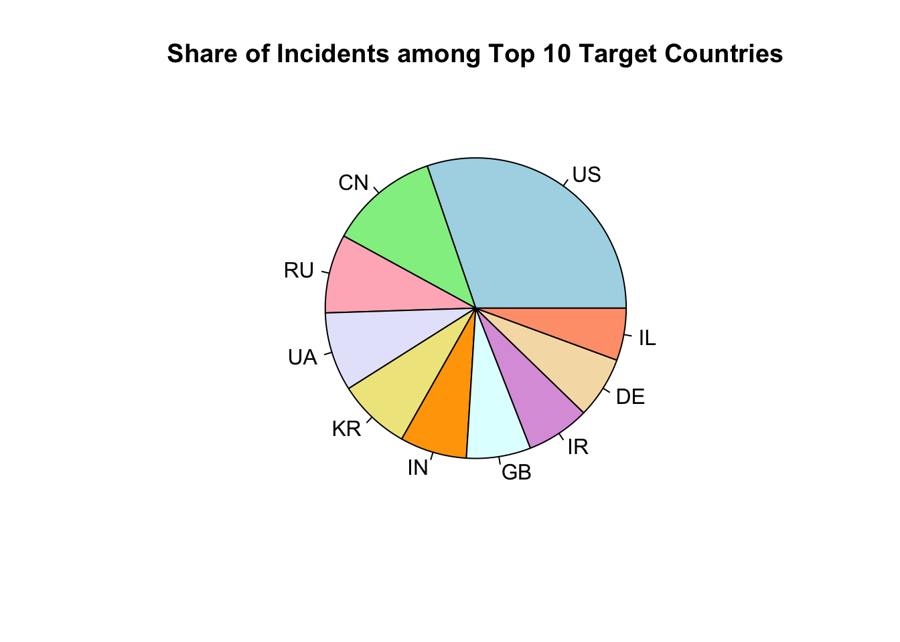
#1(d) Boxplot – Incident Year by Target Country (Top 10)
boxplot(Year ~ ISO2,
data = cfr_top,
main = "Distribution of Incident Years by Target Country (Top 10)",
xlab = "Target Country (ISO2)",
ylab = "Incident Year",
col = c("lightblue", "lightgreen", "lightpink",
"lavender", "khaki", "orange",
"lightcyan", "plum", "wheat", "lightsalmon"),
las = 2)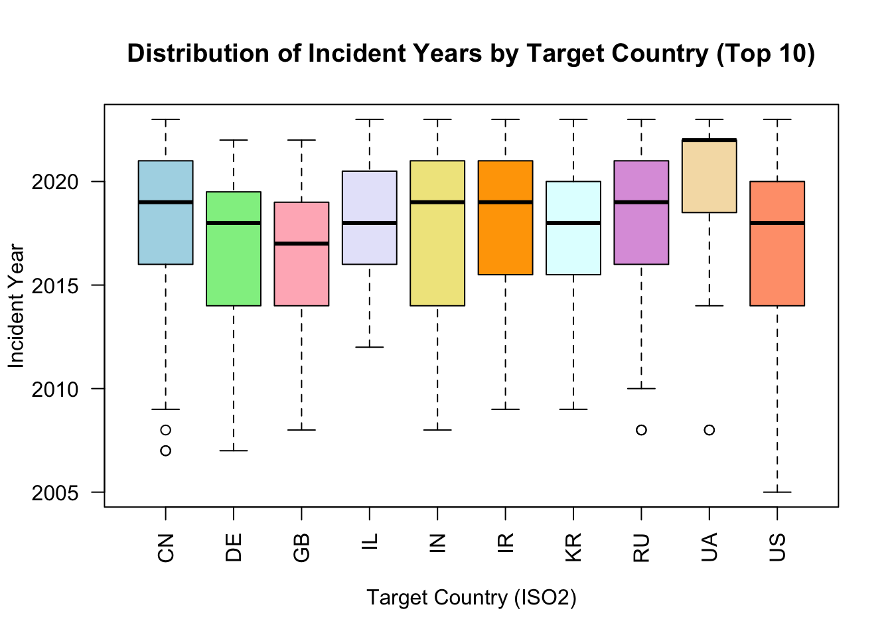
#1(e) Scatterplot – Cumulative Incidents over Time
plot(daily_counts$Date, daily_counts$CumCount,
type = "l",
main = "Cumulative Number of Cyber Incidents over Time (Targets)",
xlab = "Date",
ylab = "Cumulative Number of Incidents")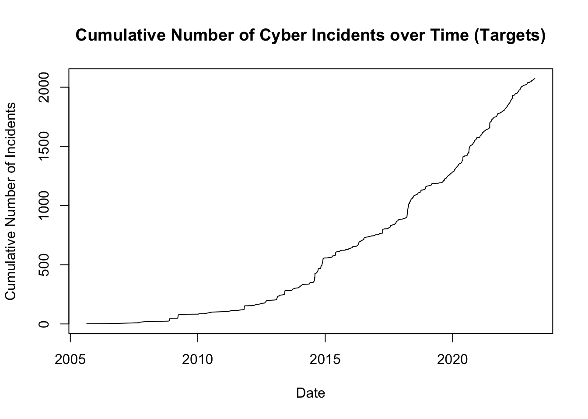
### 2. ggplot2 Graphics
library(ggplot2) Warning: package 'ggplot2' was built under R version 4.4.3## 2(a) Histogram (ggplot2)
p_hist <- ggplot(daily_counts, aes(x = Count)) +
geom_histogram(binwidth = 1,
fill = "lightblue",
color = "white") +
labs(title = "Histogram of Daily Cyber Incidents (Targets, ggplot2)",
x = "Number of Incidents per Day",
y = "Number of Days") +
theme_minimal(base_size = 14)
p_hist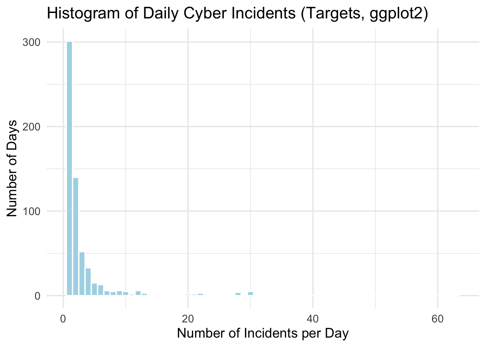
##2(b.i) Vertical Bar Chart (ggplot2)
p_bar_vert <- ggplot(victim_counts_top_df,
aes(x = reorder(ISO2, -Count), y = Count)) +
geom_col(fill = "lightgreen", color = "black") +
labs(title = "Top 10 Target Countries by Incident Count (Vertical, ggplot2)",
x = "Target Country (ISO2)",
y = "Number of Incidents") +
theme_minimal(base_size = 14)
p_bar_vert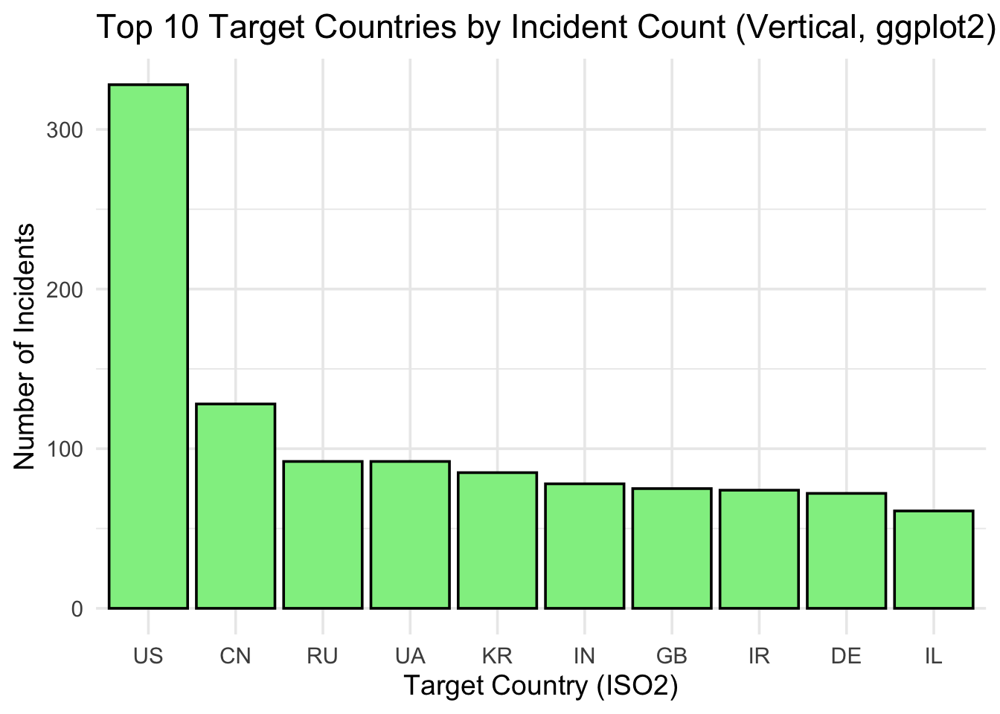
##2(b.ii) Horizontal Bar Chart (ggplot2)
p_bar_horiz <- ggplot(victim_counts_top_df,
aes(x = reorder(ISO2, Count), y = Count)) +
geom_col(fill = "lightgreen", color = "black") +
coord_flip() +
labs(title = "Top 10 Target Countries by Incident Count (Horizontal, ggplot2)",
x = "Target Country (ISO2)",
y = "Number of Incidents") +
theme_minimal(base_size = 14)
p_bar_horiz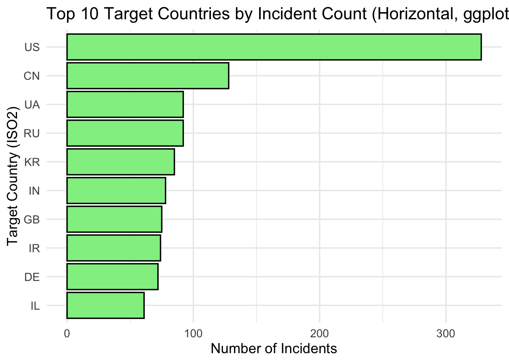
## 2(c) Pie Chart (ggplot2)
p_pie <- ggplot(victim_counts_top_df,
aes(x = "", y = Count, fill = ISO2)) +
geom_col(width = 1, color = "white") +
coord_polar(theta = "y") +
labs(title = "Share of Incidents among Top 10 Target Countries (ggplot2)",
fill = "Target (ISO2)") +
theme_void(base_size = 14) +
theme(legend.position = "right")
p_pie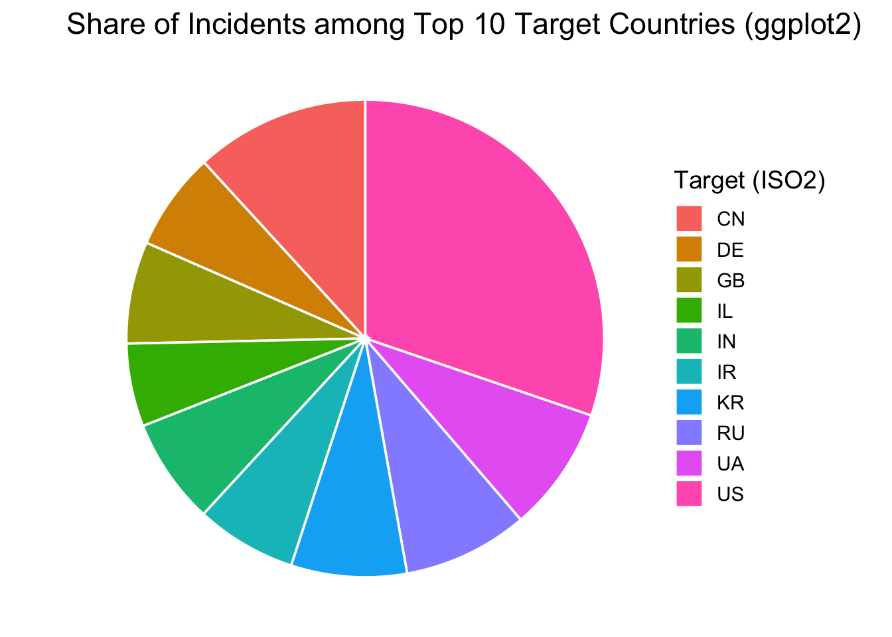
## 2(d) Boxplot (ggplot2)
p_box <- ggplot(cfr_top,
aes(x = ISO2, y = Year, fill = ISO2)) +
geom_boxplot() +
labs(title = "Distribution of Incident Years by Target Country (Top 10, ggplot2)",
x = "Target Country (ISO2)",
y = "Incident Year") +
theme_minimal(base_size = 14) +
theme(legend.position = "none")
p_boxWarning: Removed 25 rows containing non-finite outside the scale range
(`stat_boxplot()`).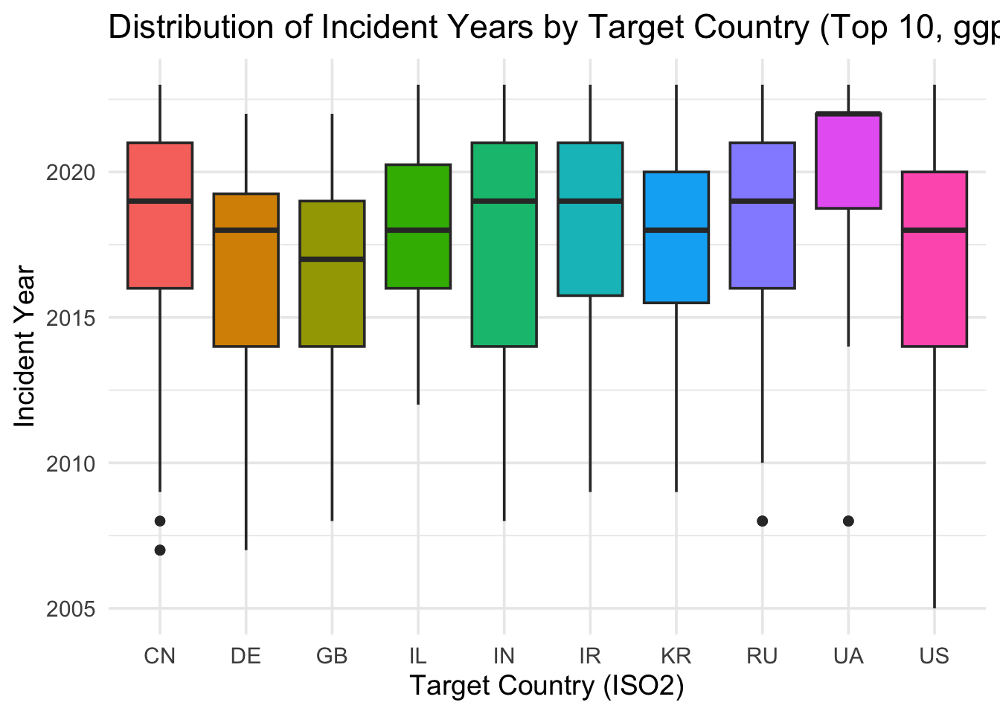
## 2(e) Scatterplot (ggplot2)
p_scatter <- ggplot(daily_counts,
aes(x = Date, y = CumCount)) +
geom_line(color = "darkblue") +
labs(title = "Cumulative Number of Cyber Incidents over Time (Targets, ggplot2)",
x = "Date",
y = "Cumulative Number of Incidents") +
theme_minimal(base_size = 14)
p_scatter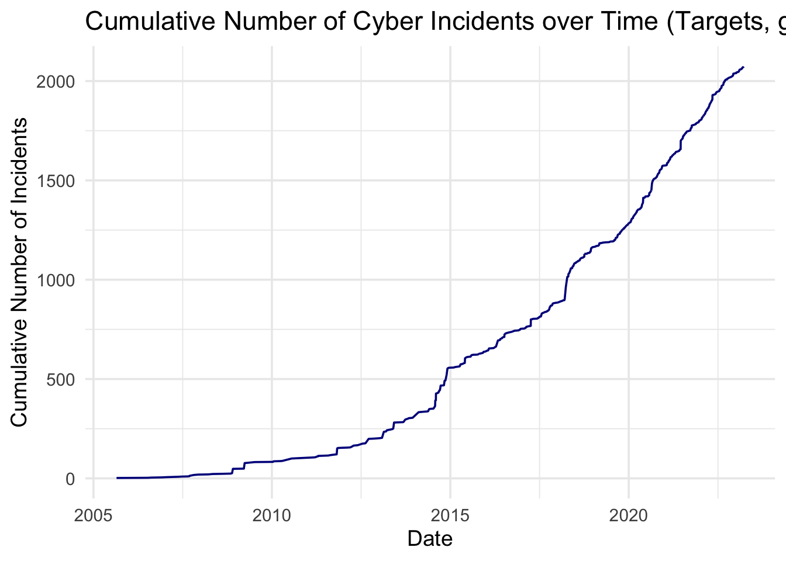
# Create folder for exported charts
dir.create("format_exports", showWarnings = FALSE)
# PDF
pdf("format_exports/base_histogram.pdf", width = 6, height = 4)
hist(daily_counts$Count,
main = "Histogram of Daily Cyber Incidents (Targets)",
xlab = "Incidents per Day",
ylab = "Days",
col = "lightblue",
border = "white")
dev.off()quartz_off_screen
2 # JPG
jpeg("format_exports/base_histogram.jpg",
width = 6, height = 4, units = "in", res = 300)
hist(daily_counts$Count,
main = "Histogram of Daily Cyber Incidents (Targets)",
xlab = "Incidents per Day",
ylab = "Days",
col = "lightblue",
border = "white")
dev.off()quartz_off_screen
2 # SVG
library(svglite)
svglite::svglite("format_exports/base_histogram.svg",
width = 6, height = 4)
hist(daily_counts$Count,
main = "Histogram of Daily Cyber Incidents (Targets)",
xlab = "Incidents per Day",
ylab = "Days",
col = "lightblue",
border = "white")
dev.off()quartz_off_screen
2 # TIFF
tiff("format_exports/base_histogram.tiff",
width = 6, height = 4, units = "in", res = 300)
hist(daily_counts$Count,
main = "Histogram of Daily Cyber Incidents (Targets)",
xlab = "Incidents per Day",
ylab = "Days",
col = "lightblue",
border = "white")
dev.off()quartz_off_screen
2 # BMP
bmp("format_exports/base_histogram.bmp",
width = 6, height = 4, units = "in", res = 300)
hist(daily_counts$Count,
main = "Histogram of Daily Cyber Incidents (Targets)",
xlab = "Incidents per Day",
ylab = "Days",
col = "lightblue",
border = "white")
dev.off()quartz_off_screen
2 ### Differences in File Formats
## PDF (.pdf): Vector graphics format. Lines and text stay sharp when zoomed in. Good for printing and academic documents.
## JPG (.jpg): Raster (bitmap) format with lossy compression. File size is small, but image quality can decrease and artifacts may appear, especially after repeated saving.
## SVG (.svg): Vector graphics for the web. Graphics can be scaled to any size without losing quality and can be edited easily in vector editors.
##TIFF (.tiff): High-quality raster format with little or no compression. File size is large but image quality is very good, often used in publishing and professional image processing.
## BMP (.bmp):Uncompressed raster format. Simple but produces large files; mainly used in older Windows environments and rarely used for web or publication.